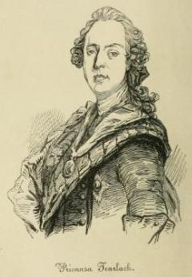

O, Tearlaich mhic Sheumais!
le Alasdair Mac-Mhaighstir Alasdair
O Charles son of James the son of James the son of Charles
O Charles, fils de Jacques, le fils de Jacques, le fils de Charles
by/par Alasdair Mac Mhaighstir Alasdair (Alexander McDonald)
Source: "Eachdraidh a Phrionnsa na bliadhna Thearlaich (1745)"Histoire du Prince" ou "l’Année de Charles" (1745)
Le Iain Mac Choinnich - By John McKenzie (1806-1848)

From "Eachdraidh a Phrionnsa", Edinburgh 1844
Tune
Tune: "Black Joke"
(also known as "Black Joker," "Black Jack," "Black Jock," "Black Joak," "But the House and Ben the House" (Shetland).
English, Scottish, Shetlands; Country Dance, Jig and Morris Dance Tune (6/8 time).
|
"The Black Joke" was a widely popular street song in England in the early 1700's. That it was extremely vulgar and bawdy probably in no small way contributed to its continued popularity into the 19th century in that country and its colonies (including America). Irregular in form in many versions, its opening phrase has six measures, while the second has ten. “The Black Joke” was heard in London as early as 1734 in Henry Carey's burlesque stage piece
Chrononhotonthologos
...[where it is quoted as a] music for dances performed in the entr'acte interval at the playhouses.
Early English collections (London publishers) that contain the tune are: - Walsh (Third Collection of Lancashire Jiggs, Hornpipes, Joaks, etc., c. 1730), - Johnson's Wrights Collection (London, c. 1742) and - Charles and Samuel Thompson’s 200 Country Dances Volume II (1765). John Kirkpatrick (1976) dates the tune to 1715 without citing his source... [The song was used] for the ceremony of the "bedding of the bride" around the turn of the century. This ceremony, in which the women of the community escorted the bride to her bed, was performed to fiddle music... The Scotch versions are based on an English tune that was known as "Black Jock" in Scotland from about 1735 (Johnson)... James Oswald printed a “Burlesque on Black Joak” in his Caledonian Pocket Companion (Book 7, c. 1756), and, a year later set it in ¾ time (as “Black Jock”) in his Collection of Scots Tunes (1757). Johnson thinks the name was changed either on purpose, to 'Scottisize' it (it was known as "Black Jack" in Northumberland), or to distance it from the extremely obscene lyrics. If the latter, the distancing was largely hypocritical, for the lyrics were well-known throughout the country. The Scots poet Robert Burns (who was no stranger to ribaldry) penned to the melody, in September, 1784, the words “My girl she’s airy, she’s buxom and gay,” one of his earliest bawdy songs... The tune appears in the McFarlane Manuscript (1740) in a long variation set (18 strains) by Charles McLean, in Bremner's Scots Tunes (1759) in 30 strains, the Gillespie Manuscript (1768), the Sharpe Manuscript (c. 1790) with 18 strains, and a flute MS. of c. 1770; all have basically the same variations, though in different order. |
Le "Jacquot Noir" était une rengaine à la mode en Angleterre au début des années 1700. C'était un air extrêmement vulgaire et paillard, ce qui lui assura une popularité qui ne se démentit pas jusqu'au 19ème siècle dans ce pays, avant de s'étendre à ses colonies (y compris les Etats Unis). De construction asymétrique, dans de nombreuses versions il présente une phrase d'ouverture de six mesures, tandis que la seconde partie en compte dix. Le "Black Joke" apparaît à Londres dès 1734 dans une pièce du répertoire burlesque intitulée
Chrononhotonthologos
...[où on la cite comme] un air de danse exécuté pendant les entractes dans les théâtres.
Les recueils de musique anglais qui contiennent ce morceau sont: - Walsh ("3ème recueil de gigue, hornpipes , joaks, etc..." vers 1730), - la "Wrights Collection" de Johnson (Londres vers 1742) et - "200 Contredanses" (Volume II) de Charles et Samuel Thompson (1765). John Kirkpatrick (1976) date la mélodie de 1715 sans citer ses sources... [Cet air était chanté] lors de la cérémonie du "coucher de la mariée" au début du siècle. Cette cérémonie, au cours de laquelle les femmes de la communauté escortaient la jeune mariée jusqu'à son lit, était accompagnée par un violoneux... Les versions écossaises du chant sont basées sur l'air anglais connu sous le titre de "Black Jock" à partir de 1735 (Johnson)... James Oswald publia une "Burlesque sur le Black Joak" dans son "Caledonian Pocket Companion" (livre 7, vers 1756), puis, un an plus tard, avec un rythme à 3 temps, sous le titre "Black Jock" dans son "Recueil de Mélodies d'Ecosse" (1757). Johnson pense que le nom du morceau fut modifié à dessein, soit pour le "scotiser" (on le connaissait comme le "Black Jack" dans le Northumberland), soit pour en faire oublier les paroles extrêmement licencieuses. Dans ce dernier cas, l'entreprise était tout à fait vaine, car tout le monde connaissait les paroles. Le poète d'expression Scots, Robert Burns, (qui s'y entendait en gauloiseries) composa ses propres paroles en 1784: "Mon amie est désinvolte, bien en chair et gaie", l'une de ses premières chansons paillardes. Le morceau paraît en 1740, dans le manuscrit McFarlane, sous forme d'une longue variation en 18 couplets par Charles McLean; dans les "Airs écossais" de Bremner (1759): 30 variations; dans le manuscrit Gillespie (1768); dans le manuscrit Sharpe (vers 1790): 18 variations; et dans un manuscrit pour flute daté d'environ 1770. Tous ces morceaux présentent en réalité les mêmes variations dans un ordre différent. |
Source: "Fiddler's Companion" (see links)
Sequenced by Christian Souchon
Sheet music- Partition

|
1. O Charles son of James,
Son of James, son of Charles, [1] With thee I'd go gladly When the call sounds for marching, And not with that vile herd, The offspring of swine! Faith and reason would make us Rise for him as ever, For the beautiful jewel Of the race of brave Banquo, [2] How I love his fair features That light me with pride! When thou leadest with spirit In the forefront of battle, At thy heels closely following I'd not shake a dew drop, Between earth an heaven In the air I am sailing, On the wings of exultance Battle-drunken, enraptured, While the notes of the great pipes Shrilly sound out their tunes. (twice) 2. O glorious, joyful, The highest of rapture That fills us with vigour By the shoulders of Charlie, Our natural being Thou plantest with pride! Thy magnanimous presence Would banish each weakness, Into steel would convert Our flesh's bas metal, When we eagerly gaze On thy uncovered face! Thy face that shows modesty, High birth and valour, Undaunted by fear 'neath the lead of thy foemen And had not the English Betrayed and forsaken thee, The crown had been gained For King James with thy courage, In spite of the beast And his followers vile. [3] 3. How I welcome the thunder Of sweetly tuned organs, And the dazzling bonfires The streets all alighting, While the markets resound with 'Great Charles, our own Prince!' While each window shines With the light that is streaming From high-burning candles Fair maidens are tending, Every thing that is fitting To hail him with pomp! The cannon all booming And belching their smoke-clouds Making each country shake With the dread of the Gaels, While we o'er-exultant Lightly, o'erweening, At his heels march in order, Imbued with such rapture That one weighs more than Three fourths of a pound! [4] Translated by John Lorne Campbell (Highland Songs of the '45, 1932) |
1. 0! Thearlaich mhic Sheumais,
Mhic Sheumais, mhic Thearlaich, [1] Leat shiùbhlainn gu h-eutrom, N' àm èigheachd 'bhi màrsal, 'S cha b' ann leis a phàigh ud, A tharmaich o 'n mhuic. Bheireadh creideamh a's reusan Oirn' eiridh mar b'àbhaist, Leis an àilleagan cheutach, 'Shliocbd èifeachdach Bhàncho: [2] Mo ghràdh a' ghruaidh àluinn, A dhearsadh orm stuirt. Thu 'g iomachd gu sùrdail, Air tùs a bhataili, Cba fhrosainn an driùchda, 'S mi dlù air do shàilean: Mi eadar an talamh 'S an t-adhar a' seòladh, Air iteig le h-aighear, Misg chath, agus shòlais; 'S caismeachd phìob' mòra, Bras-shròiceadh am puirt. (bis) 2. O 'n èibhinneachd ghlòrmhor, An t-sòlais a b' àirde! G' ar lionadh de spionnadh, Air slinneinibh Thearlaich, Gu 'n calcadh tu àrdan An càileachd ar cuirp: Do làthaireachd mhòr chùiseacb, Dh' fhògradh gach fàilinn, Gu 'n tiuntadh tu feòdar Gach feòla gu stàilinn, 'Nuair shealmaid gu sunntdach, Air fabhradh do rùisg. Gu gnùis torrach de chruadal, De dh' uaisle, 's de nàire, Nach taiseicheadh fuathas, Ro' luaidhe do nàmhaid: 'S mar deanadh fir Shasuinn Do mhealladh, 's do thrèigsinn, Bhiodh an crùn air a spalpadh, Le d' thupadh air Séurlas, A dh-aindeoin na béist'. Leis an d'érich na h-uile. [3] 3. Gu 'm b' fhoirmeil leam tòrman Na 'n òrghanan àluinn! 'S tein'-éibhinn a' lasadh Gu bras-gheal air sràidibh! 'S na cròisibh ri àrd-ghaoir, Mhòir Thearlaich ar Prionns'! Gach uinneag le foinneal A boisgeadh de dearsadh, Le solus na 'n coillean, 'S deas mbàighdeann d'an smàladh; 'S gach ni mar a b' airidh 'G cuir fàilt' air le puimp! Na canoin ri bùlrich, 'S iad a stùradh an fhàilidh, A' Cuir crith air gach dùthaich, Le mùiseag nan Gàël Agus sinne gu lù-chleasach Mùirneach làn àrdain, Am màrsail gu mlùinte, Ard-shundach m'a shàilean — 'S gann bha chudrom 's gach fear dhuinn Trì chairteil a phuint! [4] |
1. O fils de Jacques,
Et de Jacques, et de Charles, [1] O toi que je veux suivre, - Sonne le départ! - Non l'engeance De ce vil pourceau. La raison et la foi Gouvernent notre choix, Superbe rejeton Du courageux Banquo! [2] Plein d'orgueil je t'accueille Jeune homme avenant: Quand au combat, Tu guides nos rangs, Sans effleurer L'herbe de mes pieds, Entre terre et ciel, Je me sens voler. Porté par l'enthousiasme, Enivré de combat. Cornemuses, Dirigez nos pas! (bis) 2. O, jour de gloire, Bonheur sans pareil Qui nous emplit de force Et de sublime orgueil, Ce prodige Nous te le devons! Ta présence ranime Un brasier qui couvait, Transmute notre chair Si faible en dur acier: Miracle du spectacle De tes nobles traits. Ce visage où Se lit l'énergie, Impavide Face à l'ennemi Et si le Saxon Ne t'avait trahi, Le roi Jacques, c'est sûr, Tu l'aurais couronné. Foin du monstre Et de ses valets! [3] 3. Salut, orgues Aux harmonieux accords, Feux de joie dont s'embrasent, - Quel somptueux décor! - Rues et places, Pour mieux t'acclamer. A chaque fenêtre où S'illumine un lampion Une fille suspend Quelque rouge chiffon Qui soit digne et le signe De ta bienvenue. Alors que re- tentit le canon, Que montent ses â- cres exhalaisons, Chacun tremble en pen- sant à ces Gaëls Si terribles, venus Prendre à l'assaut le ciel, Qui se sentent Heureux et légers. [4] Traduction Christian Souchon (c) 2009 |
|
[1] "O
Thearlaich mhic Sheumais, Mhic Sheumais, Mhic Thearlaich
!": Charles son of James, son of James, son of Charles (see
Genealogy
). This is a short, -it generally runs seven or eight generations-
"sloinneadh"
(traditional Gaelic patronymic genealogy of the male line) - of Charles Edward Stuart.
[2] After Banquo was murdered by Macbeth, his son Fleance fled to Wales, and from him is descended Walter the Steward, who married Marjorie, daughter of Robert the Bruce, by whom he became father of Robert II, the founder of the Stewart line. [3] As previously mentioned , Mac Mhaighstir Alasdair is said to have sung this song of welcome at the raising of the Standard at Glenfinnan on the 19th August 1745. But the internal evidence of the second stanza is entirely against it [Unless this stanza refers to the 1688 events]. [4] This is bathos of an exceptionally high order! [This is the poem as McDonald published it. There is another version in MS. 63 (published in "Celtic Review" volumes IV and V), consisting of the first two stanzas above and seven additional verses: (Click here! )] |
[1] "O
Thearlaich mhic Sheumais, Mhic Sheumais, Mhic Thearlaich"
!: Charles fils de Jacques, fils de Jacques, fils de Charles (cf
Généalogie
). On a là un court, - on cite en général sept ou huit générations- "sloinneadh" (généalogie traditionnelle en gaélique des ascendants mâles) - de Charles Edouard Stuart.
[2] Après que Banquo fut assassiné par Macbeth, son fils Fleance s'enfuit au Pays de Galles et c'est de lui que descend Gautier l'Intendant (Walter the Steward), lequel épousa Marjorie, la fille de Robert Bruce. Celle-ci lui donna un fils, Robert II, fondateur de la lignée des Stuarts. [3] Comme on l'a déjà signalé , Mac Mhaighstir Alasdair est censé avoir chanté ce chant de bienvenue lors de la levée de l'étendard à Glenfinnan , le 19 août 1745. Mais la strophe N° 2 montre que c'est impossible [à moins que cette strophe ne s'applique aux événements de 1688]. [4] Cette chute, dans le texte original, est on ne peut plus maladroite: "Nul ne se sent peser plus de trois quarts de livre!" [Voilà le poème tel que McDonald le publia. Le manuscrit 63 (publié dans la "Celtic Review" volumes IV et V) contient, outre les deux premières strophes ci-dessus, les sept couplets qu'on trouvera à la page "Cannibale allemand!" ] |
|
des chants étudiés dans ELF JAKOBITENLIEDER IN GÄLISCHER SPRACHE un essai en allemand au format LIVRE DE POCHE 
de Christian Souchon |
zu der Abhandlung ELF JAKOBITENLIEDER IN GÄLISCHER SPRACHE einem deutschsprachigen TASCHENBUCH
von Christian Souchon |
is one of the songs studied in ELF JAKOBITENLIEDER IN GÄLISCHER SPRACHE presented in German as a PAPERBACK BOOK
by Christian Souchon |
Cliquer sur le lien ou l'image - Klicke auf den Link oder auf das Bild - Click link or picture for more info